Albania Exclusives
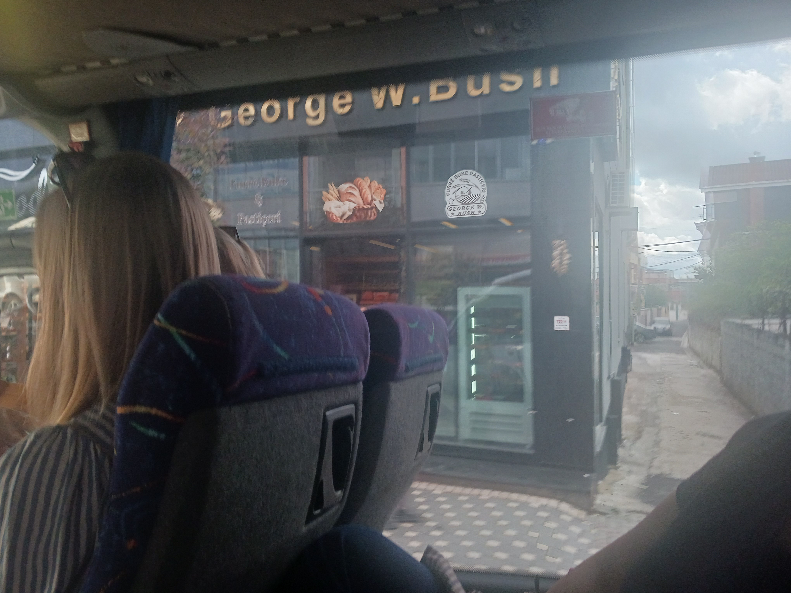
I quickly snapped a photo of the George W. Bush bakery as we drove by. Bush Jr. is to Albania what Bill Clinton is
to Kosovo - there's another bakery named after him in a different part of town, along with a
"George W Bush Road" downtown.
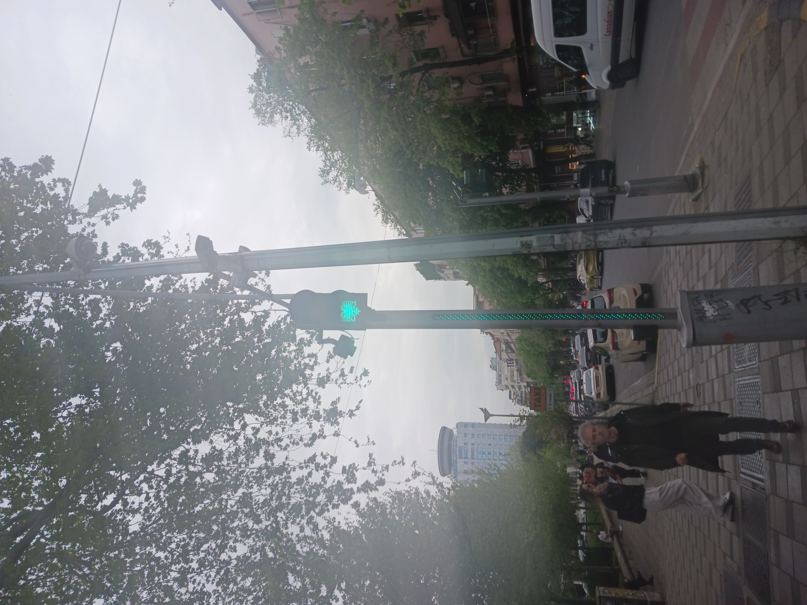
Berlin has der Ampelman, Tirana has the national mascot (a two-headed eagle) to guide foot traffic.
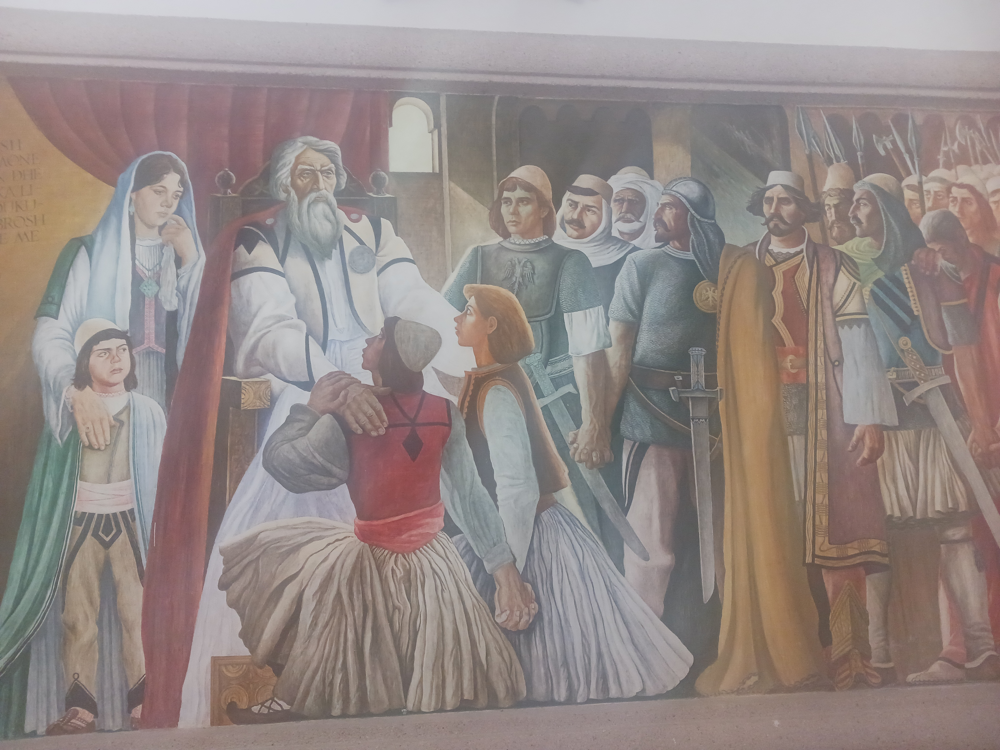
A painting reflecting citizen's reactions to learning that Skanderberg,
Albania's national hero, had died.
The kid in the bottom-left corner is giving legendary side-eye.
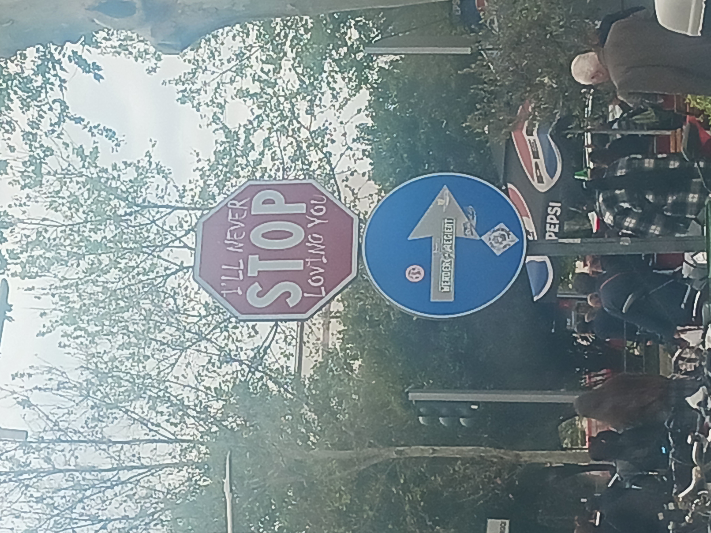
This edited stop sign was so ubiquitious I almost thought it was authorized by the city.
Life Advice

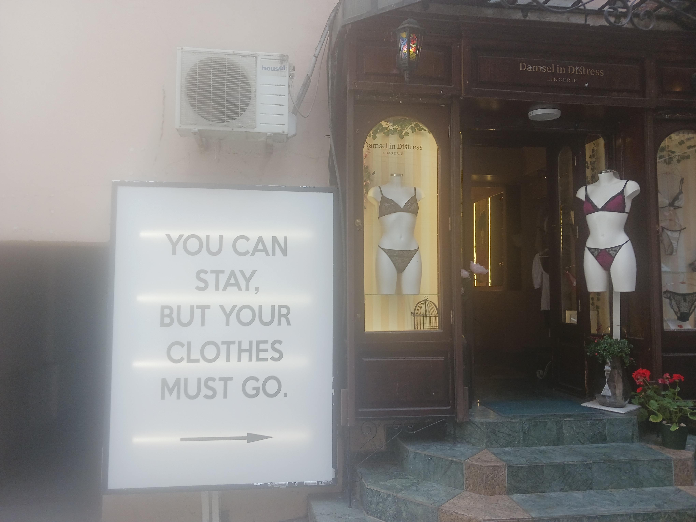
Outside a lingerie store.
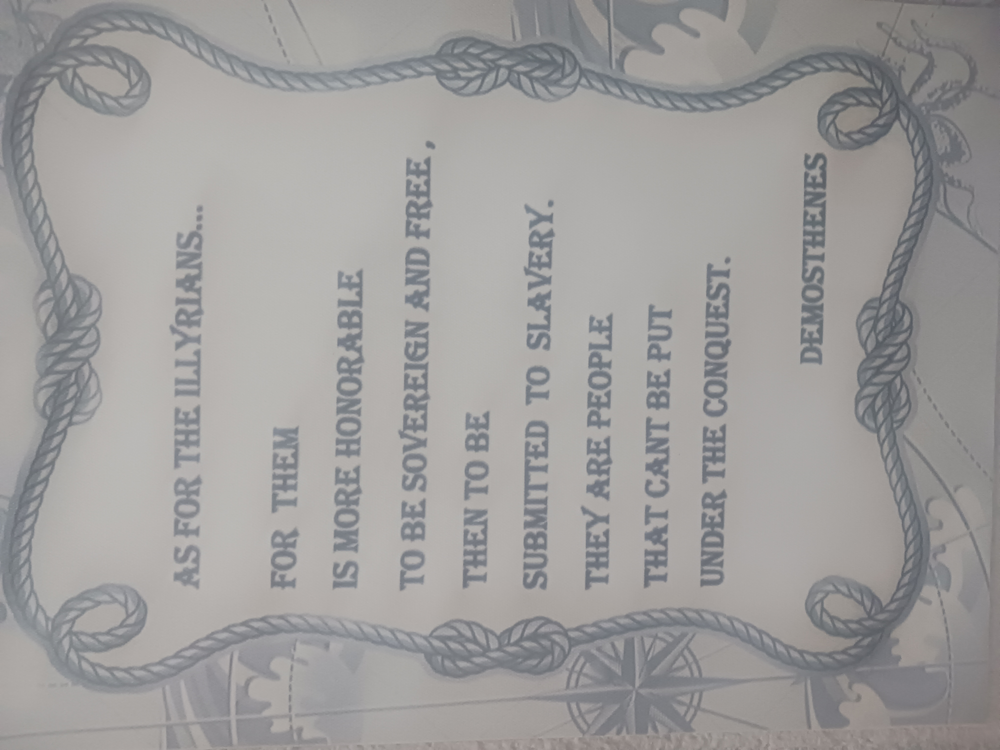
Right on.
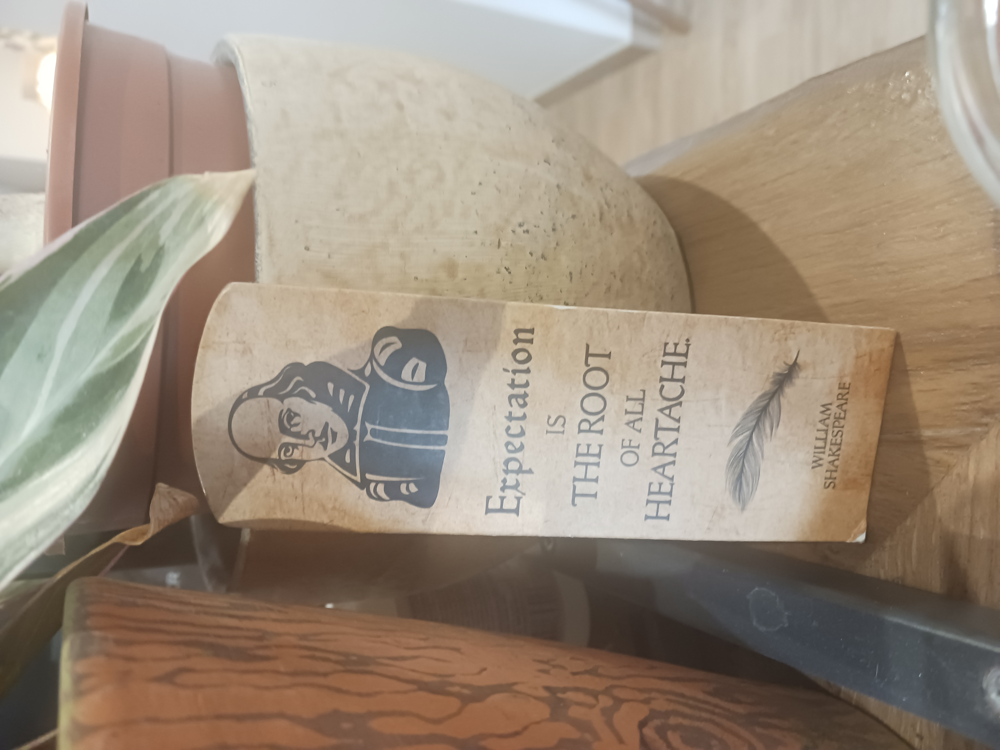
Truer words were never spoken (or were they?)
Food and Drink
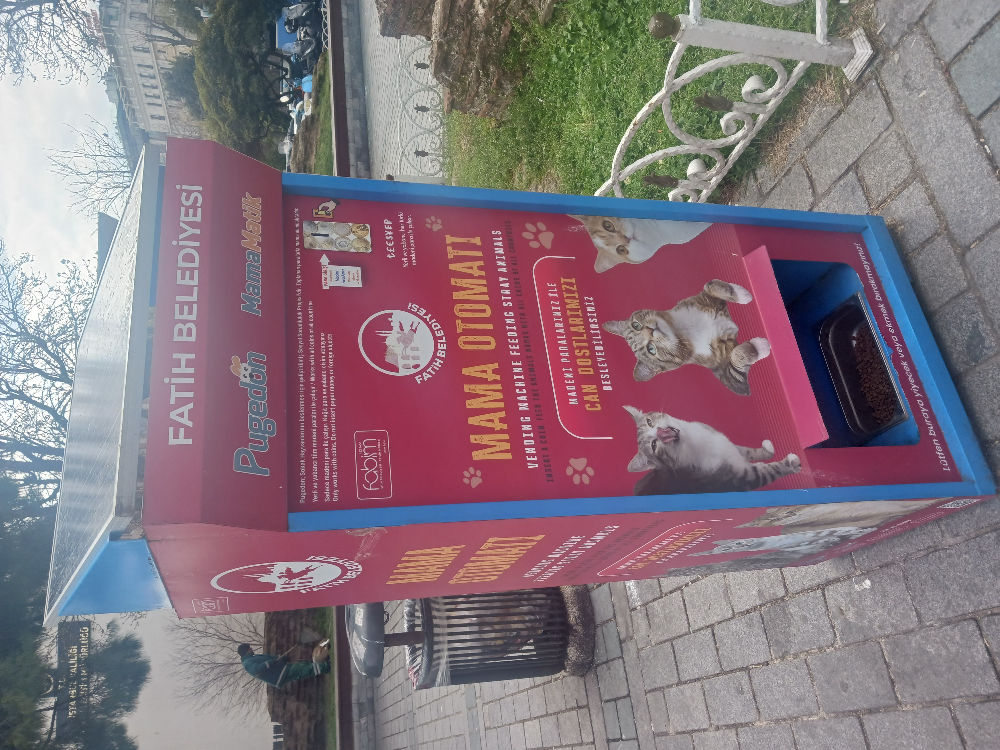
Love this concept.
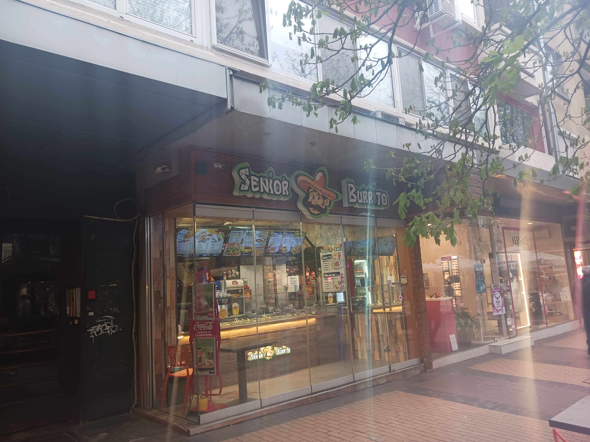
Not quite, but still cute.
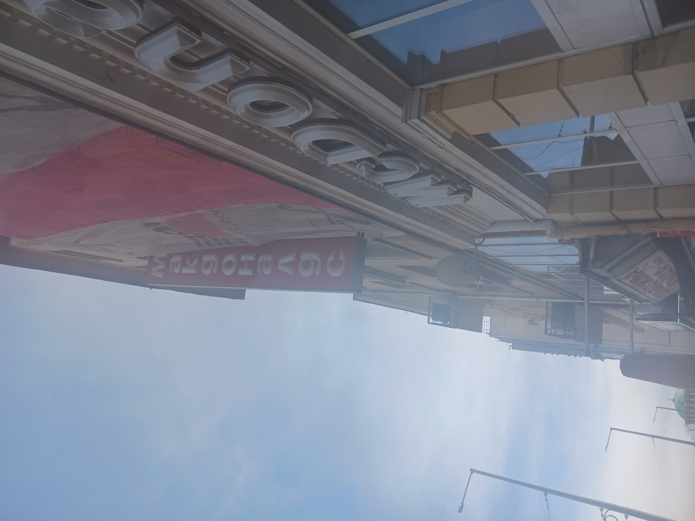
Good beginner lesson for reading Cyrillic.
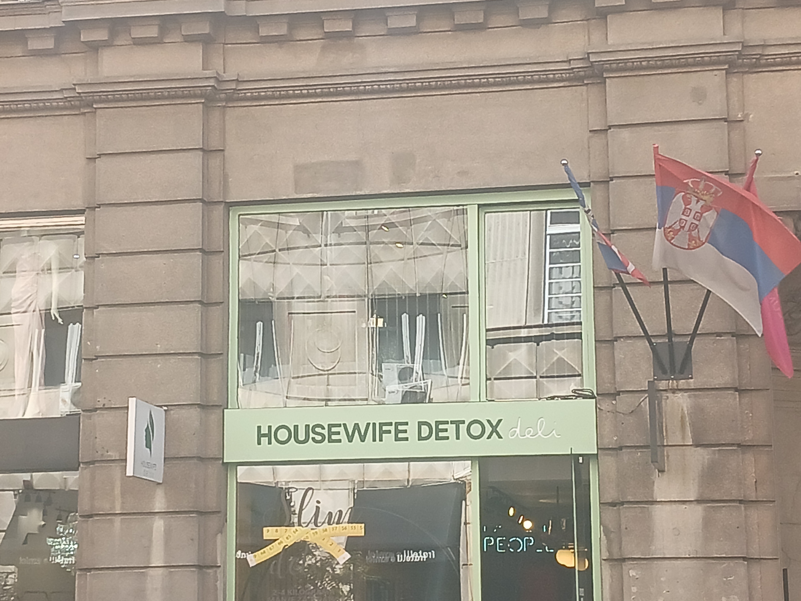
I don't even know what to say.
Miscellaneous


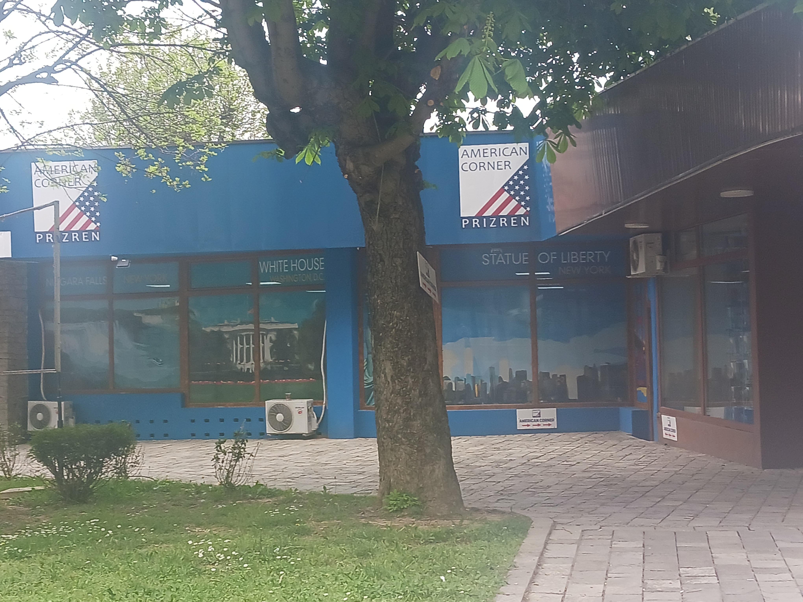
Kosovars seriously love the US.
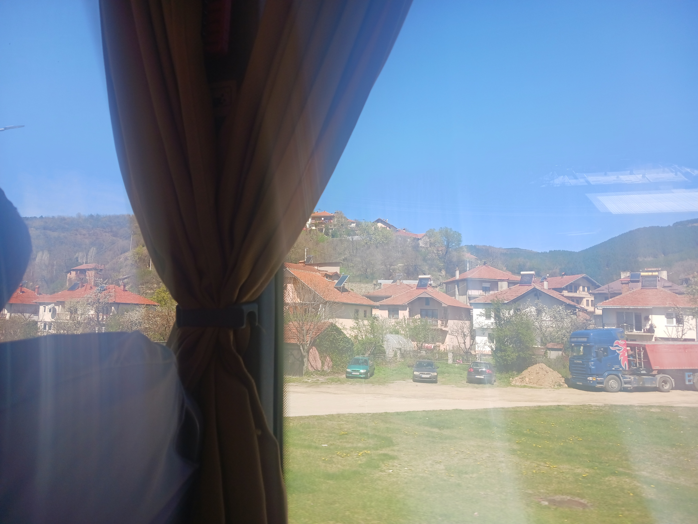
Hot water heaters are very common in these parts. I got to try one in Albania and Serbia -
it was an adjustment at first, but no trouble at all with some advance planning.